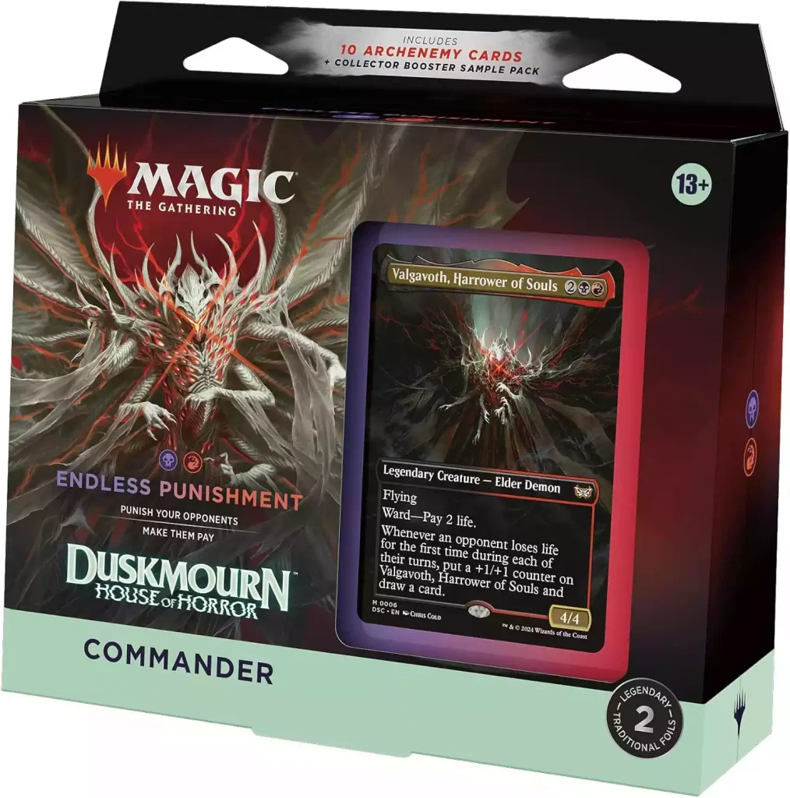

Bienvenido a Magic: The Gathering - Commander


Magic: The Gathering es un juego de cartas coleccionables con miles de cartas y estrategias. El formato Commander es una forma divertida y social de jugar.
Cada jugador utiliza un mazo de 100 cartas encabezado por un comandante legendario, lo que crea partidas únicas e impredecibles.
En esta página encontrarás mis mazos favoritos, mis cartas más poderosas y un vistazo a cómo disfruto este formato con mis amigos.